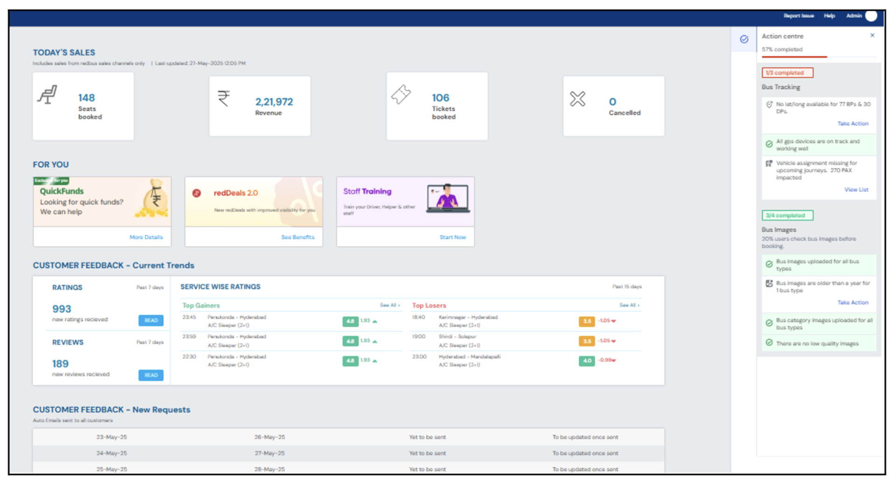
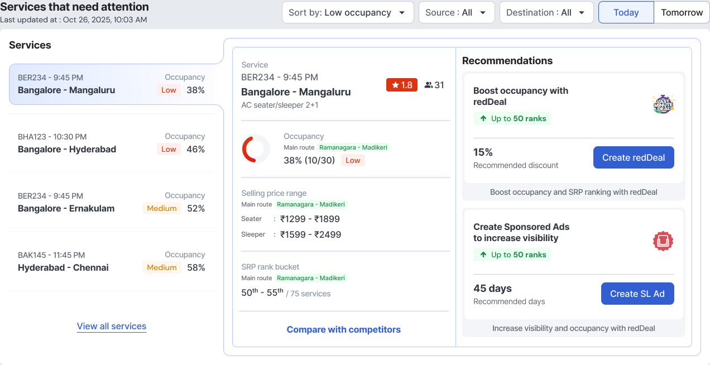

The old dashboard was a wall of metrics — operators could read a hundred numbers but not tell which service was in trouble, or what to do about it. I turned it into a to-do list.
From spotting an at-risk service to a pre-filled fix — pricing, ads, ratings, all on the homepage.
At-risk services surfaced and ranked the moment an operator lands — no scanning required.
redDeal, Sponsored Ads, Rise and revMax — four products that used to live apart, now on one surface.
The RPW homepage is where every bus operator on redPro starts their day. But it showed them everything at once and prioritised nothing — while the levers that could actually grow their business sat on other pages entirely. Four questions went unanswered.
Nothing ranked or flagged the departures at risk — operators had to scan and infer.
No competitor benchmark meant an occupancy figure carried no context.
Even when a problem was visible, the levers to fix it — pricing, ads, ratings — lived on other pages entirely.
Long-running shelves and promos competed with urgent, time-sensitive decisions for the same space.
Before redesigning, I ran a heuristic evaluation of the live dashboard against Nielsen's 10. It wasn't missing data — it was missing hierarchy, context and a path to action. Promotions sat above operations, internal jargon leaked into the UI, and "what needs me now" was scattered between an inline feed and a separate Action centre.

| Heuristic breached | Severity | Finding |
|---|---|---|
| Aesthetic & minimalist design | High | Everything weighs the same — sales, feedback, promos and the Action centre compete equally, no hierarchy tells the operator where to look first. |
| Match with the real world | High | Internal jargon leaks through: "No lat/long available for 77 BPs & 30 DPs," "270 PAX impacted," "DBD." |
| Recognition over recall | High | Numbers without a benchmark — 148 seats, ₹2,21,972 revenue, a 3.5 rating — nothing says whether that's good or bad. |
| Visibility of system status | High | Priority hidden between a collapsible Action centre (57% completed) and inline blocks — the day's most urgent service is never surfaced at a glance. |
| Consistency & standards | Medium | Six different ways to say "act": Take Action, View List, READ, More Details, See Benefits, Start Now. |
| Flexibility & efficiency of use | Medium | No bridge from insight to action — the fix lives on another page entirely. |
Each finding became a design goal: impose hierarchy, speak the operator's language, benchmark every metric, surface the day's priority first, unify the action vocabulary, and put the fix one tap from the problem.
I led the homepage end-to-end — the audit, the triage-first bet, the recommendation logic and the final UI — working closely with product, data science and engineering to keep every recommendation explainable and buildable.
Heuristic audit of the live dashboard · the triage-first structure and occupancy × rank recommendation matrix · all layout and hierarchy · the "For You" reorganisation · recommendation-card patterns, contributed to redPro v3's system.
Product — feature prioritisation, business goals. Data science — occupancy buckets, SRP-rank logic, projections. Engineering — HubbleUI feasibility, the 4-hour data reality. Growth teams — Rise, revMax, Sponsored Ads & redDeal owners.
From stakeholder feedback and three months of intervention data, three findings did the real steering.
At any moment, an operator cares most about services departing today (DBD 0) and tomorrow (DBD 1) — not last month's averages. This anchored the whole page on a two-tab, today-first tracker.
Operators triage by the service at risk, ranked worst-first — they don't read a dashboard top to bottom. Services got ranked by lowest occupancy; everything healthy got demoted.
A metric with no benchmark and no next step is noise. Operators wanted "is this good or bad — and what do I do?" Every diagnosis got paired with a benchmark and a recommended fix.
Surfaced first, with the strongest recommendations.
Room to push occupancy and SRP rank.
Protect the price. No nudge needed.
The brief read like a data gap — build operators a richer dashboard. It wasn't. It was a hierarchy and action gap: operators needed the few services that need action surfaced first, in their language, each with a fix one tap away.
Obvious read: show every metric we have and let operators find what matters. The bet I made: surface only the at-risk services, benchmarked, each with one recommended fix. Demote everything else — promos included.
Triage before overview — the first thing on screen is the service that needs action today.
Every metric ships with a competitor benchmark. Context is the product, not the raw value.
A flag without an explainable, recommended action is just anxiety — pair each with a next step.
Time-sensitive decisions earn the top; promos and shelves move below the fold.
I chose a rules-based, explainable matrix over a generic "recommended for you" feed — because operators only trust a nudge they can see the reason for.
Bet: more metrics, more control for power users. Why not: the status quo — no hierarchy, no action. The very problem we started with.
Bet: a black-box model ranks what to promote. Why not: unexplainable — operators can't see why they're being sold something, and trust erodes fast.
Bet: recommendations tied to two readable axes. Result: every card is explainable from the data on screen — occupancy × search rank.
Occupancy × SRP rank (search visibility) — every recommendation traces back to one of four cases.
| Occupancy \ SRP rank | Low visibility | High visibility |
|---|---|---|
| Low occupancy | Case 1 · empty & unseen — Fill seats & get found: redDeal, Sponsored Ads, Rise | Case 2 · empty but visible — Win on price: redDeal, revMax |
| High occupancy | Case 3 · full but unseen — Buy visibility: Sponsored Ads | Case 4 · full & visible — Good performance, no action needed |
Not a screen gallery — every part earns its place by resolving a question operators actually ask. The worst-performing departure is always the first thing they see.

Two tabs (today and tomorrow) with services ranked worst-occupancy first. The at-risk departure is the first thing an operator sees, before any promo or shelf.
Each service is diagnosed against competitors — occupancy, selling-price range, SRP-rank bucket and rating — with a single "compare with competitors" path.
Every flag carries one recommended action from the matrix, stating its projected upside before the operator commits — "up to 50 ranks," a 15% discount, 45 sponsored days — pre-filled, never recommending what's already configured.
Time-sensitive decisions earn the top; a performance trend lets operators zoom out; the "For You" shelf moves to the bottom, present but never competing with the day's priorities.
redDeal, Sponsored Ads, Rise and revMax — four growth products that used to live apart, now surfaced exactly when a service's data calls for them. The homepage becomes an activation surface, not just a report.
The redesign reshapes what the homepage is for — and what it's built to move. Every recommendation traces back to a heuristic it fixes, so the argument holds before a single metric lands.
The homepage becomes the front door for monetisation products — surfacing Rise and revMax lead-gen exactly when a service's data makes the case. Benchmarked diagnosis turns raw metrics into decisions an operator can actually act on. It's designed against clear north-star metrics — engagement with recommendations, action-completion rate, and product activations — tracked post-launch.
The win wasn't new data — it was choosing a single organising question, "what needs me today?", and letting it demote everything that didn't answer it.
The core move: editing, not addingThe hardest part: designing the recommendation matrix so it never felt arbitrary. Every card had to be explainable — tied to occupancy and rank — and had to carry an honest projection, or operators would stop trusting it.
What's next: closing the loop — showing operators the realised impact after they act on a recommendation, so the homepage learns to earn the next tap.